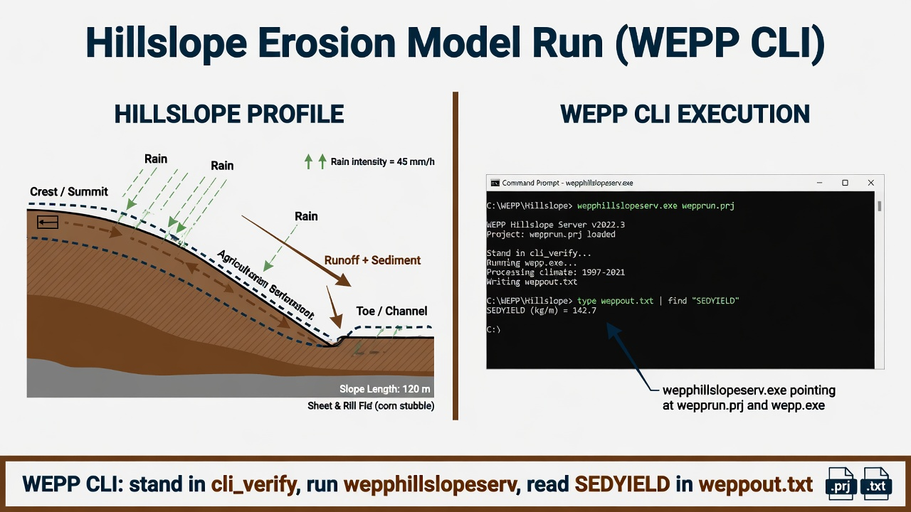

WEPP
Hillslope CLI with wepphillslopeserv.exe. The Windows GUI (weppwin) is installed but is not the verified path.

cli_verify, pass the project file to the hillslope service, read SEDYIELD.1. Get the software
Download the USDA-ARS WEPP Windows installer from the NSERL downloads page. The lab’s pinned tree is C:\Grok\Models\installs\WEPP (installer in archive\downloads\WEPP_extract).
2. Stand in the input folder
cd C:\Grok\Models\installs\WEPP\cli_verify
That folder must contain wepprun.prj, wepp.exe, and wepphillslopeserv.exe.
3. Run
.\wepphillslopeserv.exe C:\Grok\Models\installs\WEPP\cli_verify wepprun.prj runs\weppout.txt wepp.exe 0 0
4. Confirm success
Open runs\weppout.txt and find a positive <SEDYIELD> value (ton/ac). That is the verified hillslope sediment yield.